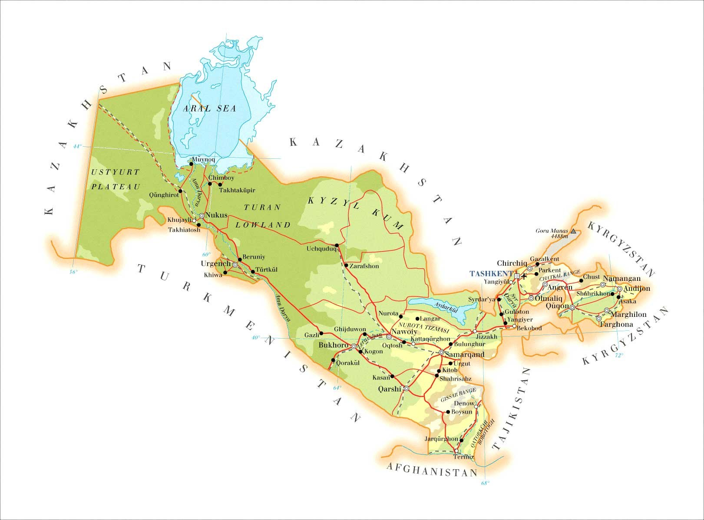
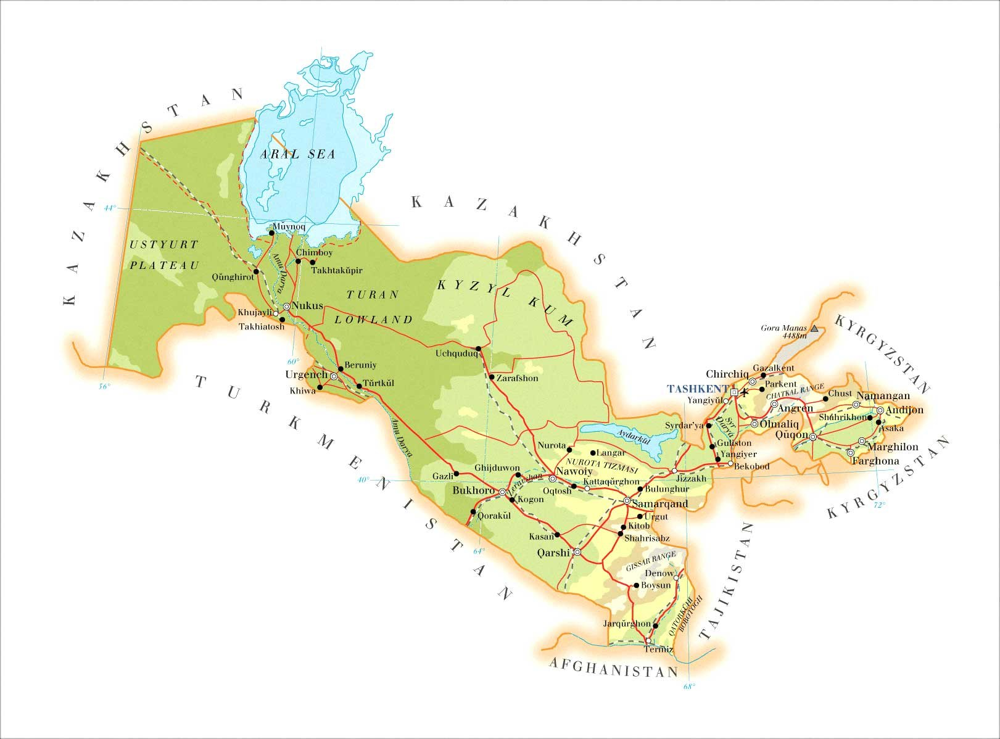

Посмотрите на карту. конешно, она не отображает ваше местоположение но - Она отображает достопремичательности Узбекистана! а что вы хотели? Я пока не умею делать в сайтах отслеживание местоположение.
 
